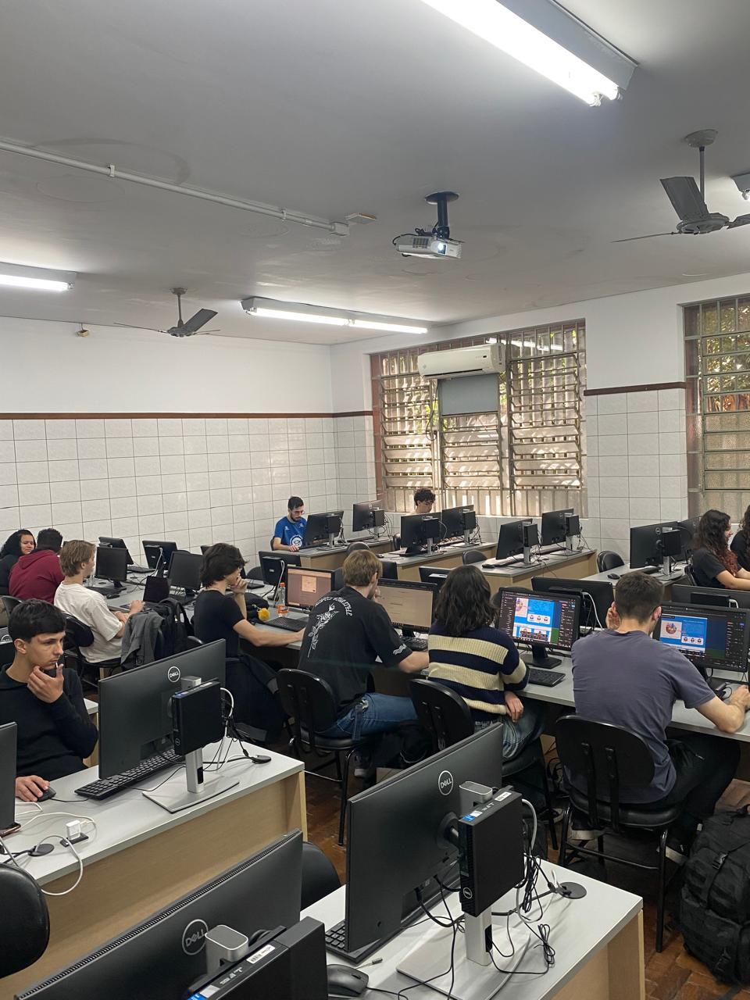

Residência FullStack
Do conhecimento ao código.
< Do código à solução >
A Residência Full Stack 5.0, do Instituto ELDORADO, é um programa de formação em tecnologia que prepara novos profissionais para o mercado de desenvolvimento de software. Durante a formação, os participantes aprendem programação, Front-end, Back-end, bancos de dados e desenvolvimento de projetos, unindo conhecimento técnico e prática. Uma jornada de aprendizado, colaboração e desenvolvimento para transformar ideias em soluções.


Equipe Residência FullStack 5.0 - Canoas / Tarde

Turma Residência FullStack 5.0 - Canoas / Tarde
Quem somos?
A turma SQC 2 participava do projeto no turno da tarde. Nossa turma possui 22 integrantes de diversas áreas contribuindo para as soluções criativas durante os desafios da nossa Jornada Fullstack. O Desenvolvimento dessa Página marca o momento em que colocamos nossas habilidades à prova ao trabalhar em equipe através do sistema SCRUM, provando nossas capacidades em um ambiente profissional sério.
Mentores
Jean
FullStack
Nicolas
FullStack
Dori Amado
FullStack